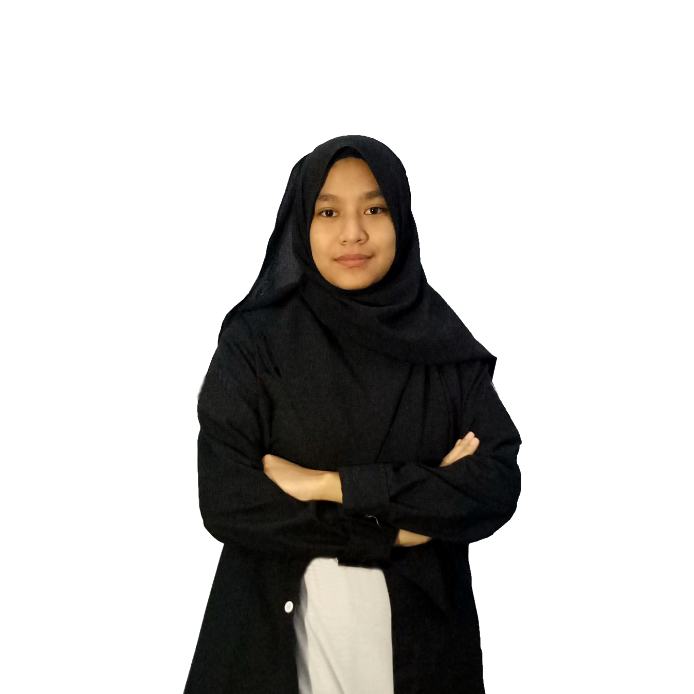

Siapakah kami?
"Siapa yang menguasai informasi, maka ia akan menguasai dunia"
Perkenalkan kami Departemen Media dan Informasi sebagai bagian dari Departemen Bidang Eksternal HMTC PROGRESIF 2021.
Departemen Media dan Informasi atau Medfo merupakan departemen yang menjadi salah satu pilar penting penjaga citra positif HMTC dalam hal visual branding dan content creating, serta menyebarkan informasi melalui berbagai media yang dimiliki oleh HMTC.
Life is an art

KEPENGURUSAN
Departemen Media dan Informasi HMTC PROGRESIF mempunyai dua orang penting yang menjabat sebagai Ketua Departemen dan Sekretaris Departemen.
Ketua

Ignatius Dwiki Iskandar
Sekretaris
Aflakah Nur Farhana
Program Kerja
HMTC ITS, khususnya departemen Media dan Informasi memiliki program kerja yang beragam dan rutin dilaksanakan tiap tahunnya. Penasaran? Yuk lihat bersama.
TCLIPS
Menyajikan informasi yang dikemas dengan kreatif dalam bentuk video sebagai bentuk hiburan bagi mahasiswa informatika.
P1
TCLIPS
TCaf
Mencerdaskan anggota HMTC terkait bidang yang berhubungan dengan dunia kerja informatika.
P2
TCaf
Sosial Media
Mempublikasikan informasi mengenai HMTC dan program kerjanya secara cepat dan efektif.
P3
Sosial Media
Media Digital
Memfasilitasi seluruh dokumentasi dan penyebaran informasi HMTC dalam bentuk video. Menyediakan dokumentasi seluruh kegiatan eventual HMTC dengan efektif dan efisien.
P4
Media Digital
Media Cetak
Meningkatkan kemampuan dalam bidang keorganisasian untuk para panitia yang terlibat. Mencerdaskan mahasiswa departemen informatika mengenai dunia IT.
P5
Media Cetak
TCast
Menyajikan informasi yang dikemas dengan kreatif dalam bentuk podcast bagi mahasiswa informatika.
P6
TCast
BMS
Meningkatkan minat mahasiswa informatika dalam bidang media. Mewadahi peserta dalam melatih kemampuan dasar(hard skill) dalam bidang media.